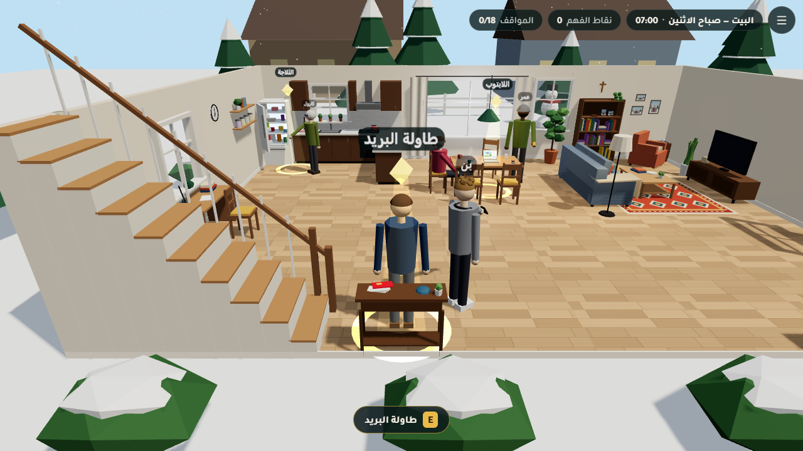
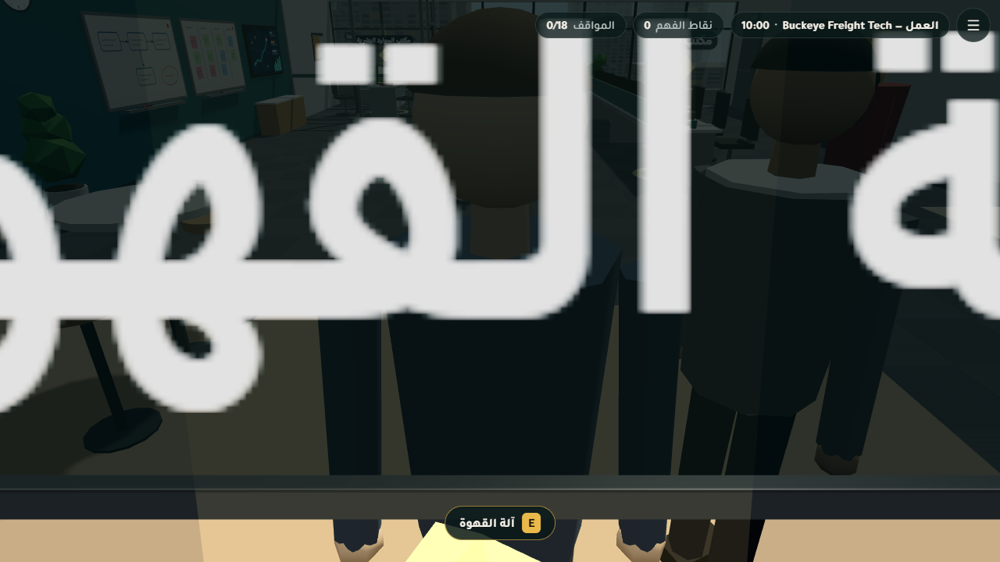
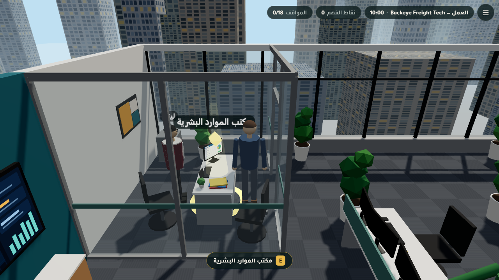
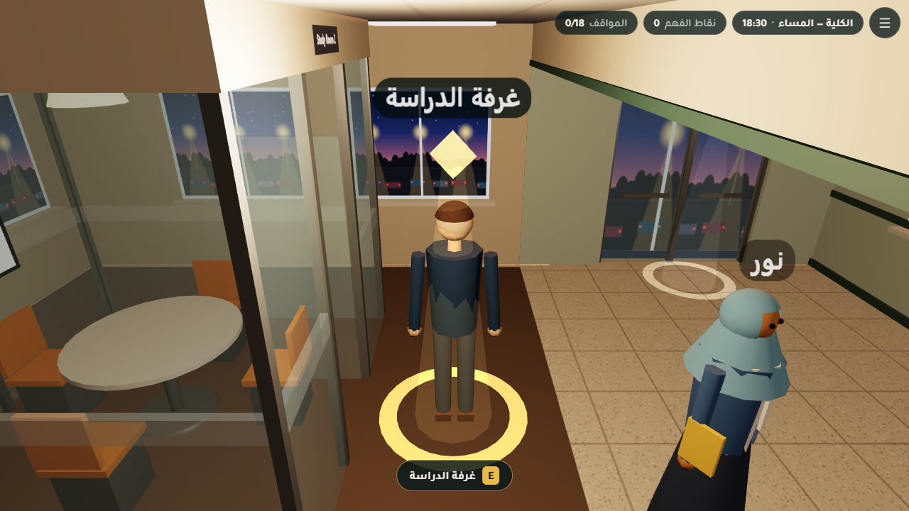
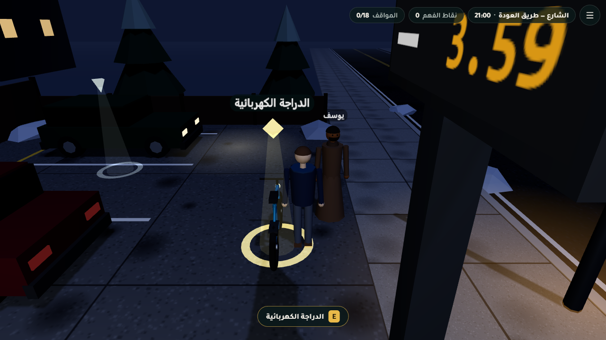
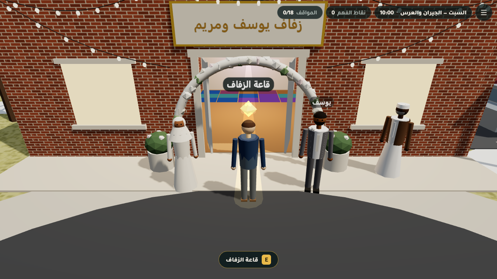

تحدي الذكاء الاصطناعي في خدمة المحتوى الإسلاميLemonada
تقرير المرحلة — المشاهد
يومك
Yawmuk — getting to know Islam through everyday life in the USA
2
المرحلة الثانية: المشاهدستة عوالم ثلاثية الأبعاد مربوطة بالسيناريو
يوثّق هذا التقرير المرحلة الثانية كما هي الآن بعد تغيير الاتجاه. يشمل المشاهد الست بهندسة إجرائية خالصة، وتحديثها للفكرة الجديدة (بيت أسرة مسيحية، وأصدقاء مسلمون)، وربطها بالمواقف الثمانية عشر، وطريقة التحقق، والمشكلات، والقرارات. ويضم لقطات شاشة جديدة التُقطت بعد آخر تعديل على المشاهد.
الأحكام الشرعية في هذا المشروع مسودة أعدّها ذكاء اصطناعي ودُقّقت آلياً، ولا تُعتمد قبل مراجعة عالم شرعي بشري.
فريق Lemonadaإعداد: وكيل التوثيق
2026-10-05الإصدار 2.0 (بعد تغيير الاتجاه)
١. ملخص تنفيذيQQs1QQ
بنى ستة وكلاء، وكيل لكل مكان، المشاهد الست في src/scenes/. كلها هندسة إجرائية من عناصر Three.js الأساسية وخامات canvas مولّدة بالشيفرة، بلا أي نموذج أو صورة خارجية. والتزم كل مشهد بعقد المشهد في TEAM_BRIEF.md، وبمعرّفات نقاط التفاعل والشخصيات في docs/hotspots.md. وبعد تغيير الاتجاه طبّق كل وكيل قسم «CHANGES FOR SCENE AGENTS» في hotspots.md: أزال مظاهر البيت المسلم من بيت آدم، ووضع الشخصيات المسلمة الجديدة، وأبقى معرّفات نقاط التفاعل ومواضعها والبداية والمخرج كما هي.
تغيير الاتجاه · Change of direction (2026-10-05)
بُنيت النسخة الأولى من المراحل الثلاث على فكرة «آدم المسلم» الذي يطبّق فقه المعاملات في يومه. وفي 2026-10-05، بقرار صاحب المشروع، صار آدم ريد مسيحياً يتعرّف على الإسلام من خلال جيرانه وزملائه وأصدقائه المسلمين، ومرشده الأول جاره عمر. وما تغيّر:
أُعيدت كتابة القصة والسيناريو.
أُضيف إلى كل حكم حقلان: newcomer_explainer («ببساطة») وcommon_ground (القيم المشتركة مع المسيحية، بآيات من KJV وفاندايك متحقق منها حرفياً).
عُدّلت المشاهد الست وواجهة المحرك.
أُجري تدقيق خاص بالتحول (docs/audit/pivot_audit.md) وإعادة اختبار كاملة.
وما ثبت ولم يتغير: المعرّفات الـ18، والأماكن، ونقاط التفاعل، ونظام النقاط، ونص الأحكام وأدلتها. المرجع: قسم «تحديث 2026-10-05» في docs/TEAM_BRIEF.md.
6/6
مشاهد تُبنى وتجتاز vite build
6/6
مشاهد حُمّلت في Chrome بلا واجهة دون أي خطأ في وحدة التحكم (تشغيل وكيل التوثيق)
18/18
نقطة تفاعل يوفرها المشهد نفسه، ولا شيء وُضع آلياً
107–236
شبكة لكل مشهد وقت التشغيل في قياسنا الأخير، والحد في الميزانية 250
تذكير
المشاهد قصصية تخييلية. وبطاقات الحكم التي تظهر فيها مصدرها ملفات content/rulings، وهي مسودة ذكاء اصطناعي مدققة آلياً تحتاج مراجعة عالم بشري (انظر تقرير المرحلة الأولى).
المشاهد في جدول واحد
المشهد
الوقت والإضاءة
نقاط التفاعل
شبكات وقت التشغيل*
مثلثات (مع النسخ)*
أضواء نقطية*
صناديق تصادم*
البيت home
الاثنين 07:00 نهار (day)
laptop fridge mail_table
107
16,204
3
34
العمل work
الاثنين 10:00 نهار (day)
coffee_machine adam_desk hr_desk
132
15,082
0
43
الكلية school
الاثنين 18:30 مساء (evening)، مع سماء وضباب مخصصين
exam_desk aid_office study_room
212
18,078
3
63
الشارع street
الاثنين 21:00 ليل (night)
bus_bench gas_station_counter ebike
112
11,484
3
45
المناسبات العامة public_events
الجمعة 19:00 مساء (evening)
gift_table dinner_table raffle_booth
120
44,842
3
72
المناسبات الخاصة private_events
السبت 10:00 ← المساء نهار (day)، مع سماء وضباب مخصصين
harris_porch garcia_yard wedding_hall
236
37,440
2
72
* قاس وكيل التوثيق هذه الأرقام في 2026-10-05 21:06 UTC على نسخة إنتاج (vite build إلى مجلد مؤقت)، بعد الإيداعين 3017f28 و72c1acf. والمثلثات محسوبة بالمرور على شجرة المشهد مع ضرب الشبكات المكررة في عدد نسخها، لأن yawmuk.stats() لا يضربها. والأرقام تشمل شخصيات المحرك وعلاماته، وقد تختلف قليلاً عن أرقام QA المقيسة على جذر المشهد.
٢. طريقة البناء والعقدQQs2QQ
عقد المشهد. يصدّر كل ملف { id, title, build(ctx) }، ويُرجع:
الربط بالسيناريو. يحيل كل موقف في content/script/<location>.json إلى نقطة تفاعل (hotspot) وشخصية (npc.id). ونقاط التفاعل الثماني عشرة كلها يوفرها المشهد، وقد تحقق من ذلك المحرك ووكيل التوثيق.
ميزانية الهاتف. لا يزيد المشهد على 60 ألف مثلث و250 شبكة، وأضواؤه الإضافية بلا ظلال، وخاماته canvas لا تتجاوز 512 بكسل، ولا يحجز ذاكرة في كل إطار.
قاعدة الملفات. يعدّل كل وكيل ملف مشهده ومجلده الفرعي فقط، ولا يلمس المحرك. وأي حاجة من المحرك تُكتب في تقريره.
٣.١ مشهد البيتQQschomeQQ
البيت — صباح الاثنين · src/scenes/home.jsالاثنين 07:00 · نهار (day)
مشهد البيت من نقطة البداية: لقطة جديدة من Chrome بلا واجهة على نسخة الإنتاج (?scene=home&nointro=1&lang=ar)، بدقة 1280×720، بعد آخر تعديل على المشاهد.
الوصف
طابق أرضي مفتوح مساحته 12 × 9 م، لبيت مستأجر متواضع لأسرة ريد المسيحية في كولومبس، صباح يوم ثلجي.
بعد التحول: أُزيلت سجادة الصلاة والمصحف والمسبحة والطاقية، ولا أحد من الأسرة يرتدي حجاباً.
على أعلى رف الكتب إنجيل بغلاف جلدي بني بجانب صورتين عائليتين، وفوق الرف على الجدار صليب خشبي صغير. وصار الركن الشمالي الشرقي ركن قراءة فيه كرسي ومعرض صور عائلية.
في المطبخ ثلاجة مفتوحة بزاوية 60°. وعلى الكاونتر بجانبها علبة «جيلو» حمراء، وزجاجة نبيذ داكنة، وزجاجة الفانيليا، ولحم بقري مغلف. وهذه مكونات عشاء الأربعاء مع عائلة عمر.
على طاولة الطعام لابتوب سارة يعرض إعلان البيت، وثلاثة أكواب قهوة، والكرسي المسحوب هو كرسي عمر.
عند الباب مجرفة ثلج أعادها عمر، وطاولة البريد وعليها إعلان المتجر.
خارج النوافذ ثلج يتساقط، وصنوبر، وبيوت الجيران.
تقنية لافتة: جدران «بيت الدمى» أحادية الوجه، فتختفي حين تكون الكاميرا خارجها، ومصادماتها بارتفاع 1.1 م. وصارت الأضواء النقطية 3 بعد أن أزال QA ضوء الثلاجة.
المواقف الثلاثة
عمر — جار آدم وصديقه المسلمhome.mortgage · نقطة laptop
على طاولة الطعام لابتوب سارة مفتوح على بيت صغير بثلاث غرف، وبجانبه «موافقة مبدئية على قرض عقاري بفائدة 6.4%». عمر يشرب القهوة التي صبّتها له كارول وينظر إلى الشاشة مبتسماً.
خاطئ«بصراحة يا عمر، هذه فائدة بثوب آخر. أنت تدفع أكثر من أجل لافتة». (0)
الأفضل«مثير! ما الفرق الحقيقي بين هذا والقرض؟ ومن يتحمل الخسارة إن انخفض سعر البيت؟» (10)
مقبول«جميل، بالتوفيق لكما». وأعود إلى صور البيت. (5)
كارول — أم آدمhome.food_ingredients · نقطة fridge
بعد خروج عمر، كارول تقف أمام الثلاجة المفتوحة بنظارة القراءة، تكتب قائمة عشاء الأربعاء: عائلة عمر مدعوة. على الكاونتر: لحم بقري من السوبرماركت، علبة «جيلو» لسلطة الفواكه، زجاجة «خلاصة فانيليا»، وزجاجة نبيذ أحمر لصلصة اللحم.
مقبول«لنطبخ كل شيء نباتياً بلا حلوى، هكذا نضمن ألا نخطئ». (5)
خاطئ«لا تقلقي يا أمي، كميات صغيرة. لن يلاحظوا، ولا داعي لأن نخبرهم». (0)
الأفضل«لنسأل عمر مباشرة». أرسل له رسالة عن اللحم والجيلاتين والنبيذ والفانيليا. (10)
بن — أخو آدم الأصغرhome.credit_card · نقطة mail_table
على طاولة البريد عند الباب: إعلان من متجر إلكترونيات «بطاقة المتجر: 0% فائدة لمدة 12 شهراً!». بن، بشعر أشعث، يلوّح بهاتفه وعليه تطبيق «اشترِ الآن وادفع لاحقاً».
الأفضل«أظن أن المسلمين يتجنبون دفع الفائدة، وانظر: العقد نفسه فيه فائدة بأثر رجعي وغرامة. اسأله عن السبب — وبصراحة، فكرته في الادخار ذكية لك أيضاً». (10)
خاطئ«المسلمون لا يُسمح لهم بالتعامل مع البنوك أصلاً، لذلك رفض». (0)
مقبول«هذا شأنه. أنت فقط لا تتأخر في الدفع». (5)
بعد نقل آدم إلى نقطة laptop

بعد نقل آدم إلى نقطة mail_table
البيانات التقنية
نقطة التفاعل
الموضع
نصف القطر
laptop
[0.12, 0.85, −1.42]
1.8
fridge
[−5.0, 1.0, −3.3]
1.9
mail_table
[−2.0, 0.9, 3.95]
1.7
البداية
[0,0,3]
المخرج
[4.5,0,4.0] r1.5 (الباب الأمامي)
الأداء (تقرير الوكيل)
القيمة
المشهد كاملاً بعد التحول (تقرير الوكيل)
107 شبكات، و16.2 ألف مثلث، و3 أضواء نقطية
قبل التحول
89 شبكة، و15.8 ألف مثلث
الخامات
خامات canvas، منها صورة عائلية جديدة بلا وجوه ولا نص
الشخصيات: عمر (1.85 م، جاكيت زيتي، لحية قصيرة، طاقية صوف رمادية، وفي يده كوب قهوة)، وكارول (شعر فضي، كارديغان زيتي، نظارة، دفتر قائمة الطعام)، وبن (هودي رمادي وسماعات وهاتف). وسارة شخصية خلفية جالسة أمام لابتوبها.
الشخصيات التي وجدها وكيل التوثيق في المشهد النشط: omarcarolbenbg_sarah
التحقق: نجح npm run build، ونجح npm test (178/178). وفي Chrome بلا واجهة لم تقع أخطاء، وكل النقاط والمخرج قابلة للوصول. ونجح مشهد البيت في e2e بإعداداته الأربعة.
ملاحظات وانحرافات: لم تتغير معرّفات النقاط ولا مواضعها، ولا البداية ولا المخرج. وأشار الوكيل إلى أن رِجلَي الشخصية الجالسة تحتاجان +π/2، وصُحّح دليل المحرك بذلك.
مشهد العمل من نقطة البداية: لقطة جديدة من Chrome بلا واجهة على نسخة الإنتاج (?scene=work&nointro=1&lang=ar)، بدقة 1280×720، بعد آخر تعديل على المشاهد.
الوصف
مكتب شركة Buckeye Freight Tech: مساحة داخلية 18 × 12 م، وسقف ارتفاعه 3 م، ونوافذ على أفق كولومبس الشتوي.
في المطبخ الصغير آلة القهوة، وأُضيفت دلّة نحاسية وثلاثة فناجين على صينية، فالبخار يتصاعد الآن من الدلّة. وسمير يحب القهوة العربية.
على مكتب آدم علبتا ساعة ذكية سوداوان بشريط فضي، واحدة لآدم وأخرى لسمير.
في الركن مكتب الموارد البشرية الزجاجي، وعلى شاشة ليندا نموذج 401(k).
على الجدار الشمالي باب «غرفة هادئة»، ومعه رف أحذية وسجادة صلاة مطوية.
تقنية لافتة: شخصية واحدة في نقطتين: سمير هو شخصية coffee_machine وadam_desk معاً عبر stations، فينتقل بعد كل موقف إلى النقطة التالية. وأضاف QA للجدران المكررة صناديق حجب غير مرئية (cameraOccluders)، فلم تعد الكاميرا تبدأ خلف الجدار.
المواقف الثلاثة
سمير — زميل مبرمج مسلمwork.alcohol_pork_job · نقطة coffee_machine
عند آلة القهوة، جيك عرض للتو على آدم وسمير عملين جانبيين: نادل في عطلة نهاية الأسبوع في «بار آند غريل» لابن عمه يقدّم البيرة وضلوع الخنزير المدخنة بـ25 دولاراً في الساعة، أو برمجة تطبيق طلبات لمصنع بيرة صغير. جيك ذهب إلى اجتماعه، وسمير يهز رأسه مبتسماً.
الأفضل«أحترم هذا. سؤال فقط: أين ترسم الحد؟ هل تستطيع مثلاً العمل في سوبرماركت يبيع البيرة بين أشياء أخرى؟» (10)
مقبول«مفهوم، سأخبر جيك أنك لست مهتماً». (5)
خاطئ«هيا يا سمير، لا أحد سيعرف. المال جيد، والله لن يحاسبك على زر في تطبيق». (0)
ليندا — مسؤولة الموارد البشريةwork.retirement_401k · نقطة hr_desk
مكتب ليندا الزجاجي في آخر الممر. على شاشتها قائمة صناديق خطة 401(k)، وبينها اسم لم يلاحظه آدم من قبل: «صندوق الأسهم المتوافق مع الشريعة».
خاطئ«إذاً هو صندوق للمسلمين فقط، ويذهب ربحه للمساجد؟» (0)
الأفضل«ما معايير الفرز؟ سأسأل سمير أيضاً لماذا اختاره». (10)
مقبول«سأختار الافتراضي كالعادة». وأنهي التسجيل دون أسئلة. (5)
سمير — زميل مبرمج مسلمwork.honesty_gifts · نقطة adam_desk
آدم وسمير عضوان في لجنة تقييم نظام تتبع الشاحنات الجديد. صباحاً ترك مايك، مندوب إحدى الشركات المتنافسة، علبة أنيقة على مكتب كل منهما: ساعة ذكية بـ400 دولار «هدية أعياد». الآن يقف سمير عند مكتب آدم، والعلبة في يده مغلقة.
مقبول«قرارك محترم». وأضع ساعتي في الدرج لأفكر فيها لاحقاً. (5)
خاطئ«آه، إذاً دينكم يمنعكم من قبول الهدايا من المسيحيين؟» (0)
الأفضل«منطقي. سأعيد ساعتي أيضاً ونذهب إلى ديف معاً، وسأسجّل ساعاتي الفعلية». ثم أسأله: هل هذا شيء يتعلمه المسلمون منذ الصغر؟ (10)

بعد نقل آدم إلى نقطة coffee_machine

بعد نقل آدم إلى نقطة hr_desk
البيانات التقنية
نقطة التفاعل
الموضع
نصف القطر
coffee_machine
[−8.6, 0.95, −1]
1.9
adam_desk
[−1, 0.78, 1.5]
1.9
hr_desk
[6.5, 0.78, −4]
1.8
البداية
[−6.6,0,4.7]
المخرج
[7.5,0,5] r1.5 (باب الدرج)
الأداء (تقرير الوكيل)
القيمة
بعد التحول (QA، desktop-en)
132 شبكة (11 مكررة)، و15.1 ألف مثلث، و0 أضواء نقطية
استدعاءات الرسم لكل إطار
121 على الحاسوب، و33 على الهاتف
الشخصيات: سمير (قميص أبيض، سترة رمادية، لحية سوداء قصيرة، نظارة)، بموقعين: عند القهوة [−7.45,0,−0.25]، وعند المكتب [−0.2,0,2.45]. وليندا في مكتبها. وصار جيك ومايك خلفيين يمشيان، ومعهما زميلان خلفيان جالسان.
الشخصيات التي وجدها وكيل التوثيق في المشهد النشط: samirbg_jakebg_mikelindabg_coworker1bg_coworker2
التحقق: نجح npm run build. وفي e2e (desktop-en) ظهر سمير عند آلة القهوة ثم عند مكتب آدم. وفي إعداد mobile-en لُعب المشهد بترتيب معكوس، فانتقل سمير إلى المكتب أولاً ثم عاد.
ملاحظات وانحرافات: مسح الكاميرا بعد التحول: 2/8 زوايا محجوبة عند آلة القهوة بسبب خزائن المطبخ، و1/8 عند الموارد البشرية.
٣.٣ مشهد الكليةQQscschoolQQ
الكلية — المساء · src/scenes/school.jsالاثنين 18:30 · مساء (evening)، مع سماء وضباب مخصصين
مشهد الكلية من نقطة البداية: لقطة جديدة من Chrome بلا واجهة على نسخة الإنتاج (?scene=school&nointro=1&lang=ar)، بدقة 1280×720، بعد آخر تعديل على المشاهد.
الوصف
الممر: خزائن زرقاء، وآلة بيع، وأبواب زجاجية على موقف السيارات وقت الغسق.
مكتب المساعدات المالية:عمر بزي تمريض أزرق وبطاقة تعريف، وأمامه كومة استمارات بيضاء. وروزا خلف الكاونتر شخصية خلفية.
غرفة الدراسة الزجاجية: صارت فارغة، وعلى شاشتها «Study Room 2 · Door stays open». ونور (حجاب أزرق سماوي، ودفتر في يدها) تقف عند بابها.
طاولة الدراسة المفتوحة في المكتبة: نُقلت إلى [4,0,−4]، وعليها 4 كراسٍ ولابتوبان ومصباح.
تقنية لافتة: شبكة حجب مدمجة لا تُرسم (cameraOccluders) فيها السقف والجدران الكاملة، فتبقى الكاميرا داخل الغرفة. وخُفّضت الأضواء النقطية من 7 إلى 3 في QA.
المواقف الثلاثة
كريم — زميل مسلم في المادةschool.cheating · نقطة exam_desk
في القاعة قبل المحاضرة. اختبار الأسبوع القصير على الإنترنت فردي. في مجموعة الدردشة كتب تايلر: «أرجوكم، لقطة شاشة لأي واحد منكم؟ عملت مناوبتين». كريم، الجالس بجانب آدم، كتب: «آسف يا أخي، لا أستطيع. لكن تعال نذاكر معاً بعد المحاضرة».
خاطئأرسل اللقطة لتايلر، وأقول لكريم: «استرخِ، الله لا يصحح الاختبارات القصيرة». (0)
مقبوللا أرسل شيئاً، وأتجاهل رسالة تايلر دون رد. (5)
الأفضل«معك حق». أرد على تايلر: «لن أرسل الإجابات، لكن انضم إلينا أنا وكريم بعد المحاضرة». ثم أسأل كريم كيف يرى الإسلام الأمانة في الدراسة. (10)
عمر — جار آدم، طالب تمريضschool.student_loan · نقطة aid_office
في الاستراحة يجد آدم عمر عند مكتب المساعدات المالية يملأ استمارات كثيرة. السيدة رودريغيز عرضت عليه قرضاً فيدرالياً مدعوماً «بتوقيع واحد»، لكنه طلب أوراق المنح وخطة الأقساط بدلاً منه.
الأفضل«القرض الحسن؟ لم أسمع به. كيف يعمل الصندوق — ومن يموّله؟» وأساعده في أوراق المنحة. (10)
مقبول«بالتوفيق يا صاحبي»، وأعود إلى المحاضرة. (5)
خاطئ«يا رجل، هذا جنون. فائدة منخفضة جداً — لا تدع الدين يعطّل تعليمك». (0)
نور — زميلة مسلمة في مجموعة الدراسةschool.mixed_social · نقطة study_room
بعد المحاضرة، مجموعة الدراسة (آدم، نور، هانا، كارلوس) حجزت غرفة صغيرة في المكتبة. وصلت رسالة: هانا وكارلوس لن يحضرا. نور تقف عند باب الغرفة ولا تدخل، وتنظر إلى الطاولات المفتوحة في القاعة الكبيرة.
خاطئ«بجد؟ نحن في أمريكا. هل تظنينني خطيراً؟» (0)
الأفضلأضع يدي على صدري مبتسماً: «مفهوم تماماً!» ثم أسأل: «هل هذا من باب الاحترام؟ أحب أن أفهم». (10)
مقبولأسحب يدي بسرعة محرجاً، وأجمع أغراضي دون كلمة. (5)
بعد نقل آدم إلى نقطة exam_desk

بعد نقل آدم إلى نقطة study_room
البيانات التقنية
نقطة التفاعل
الموضع
نصف القطر
exam_desk
[−5.95, 0, −3.9]
1.6
aid_office
[0.3, 0, 2.35]
1.6
study_room
[7.05, 0, −3.0]
1.6
البداية
[−9,0,0]
المخرج
[9.5,0,0] r1.5 (أبواب زجاجية إلى الموقف)
الأداء (تقرير الوكيل)
القيمة
بعد التحول (QA، desktop-en)
212 شبكة (25 مكررة)، و18.1 ألف مثلث، و3 أضواء نقطية
الشخصيات التي وجدها وكيل التوثيق في المشهد النشط: kareemomarnoorbg_tylerbg_rosabg_student_curlybg_worker
التحقق: نجح npm run build، ونجح npm test (178/178). وفي Chrome بلا واجهة: المشهد حقيقي، والنقاط الثلاث من المشهد، والشخصيات kareem وomar وnoor.
ملاحظات وانحرافات: أُزيلت د. ميتشل، وصارت الغرفة الزجاجية بلا طلاب، وهذا يطابق موقف نور الجديد: اقتراح طاولة مفتوحة بدل الخلوة.
٣.٤ مشهد الشارعQQscstreetQQ
الشارع — طريق العودة · src/scenes/street.jsالاثنين 21:00 · ليل (night)
مشهد الشارع من نقطة البداية: لقطة جديدة من Chrome بلا واجهة على نسخة الإنتاج (?scene=street&nointro=1&lang=ar)، بدقة 1280×720، بعد آخر تعديل على المشاهد.
الوصف
شارع ليلي مبلل، فيه محطة وقود ومتجر صغير، وموقف حافلات، وسيارة شرطة.
عمر جالس على مقعد الحافلات وفي يده المحفظة البنية، وعلى المقعد إيصال صغير.
لوحة الجائزة الكبرى («JACKPOT $900 MILLION») صارت لوحة إعلانية خارج المتجر على الرصيف المقابل.
يوسف بمعطف بني طويل عند الدراجة الكهربائية.
آدم يرتدي في هذا المشهد وحده جاكيتاً كحلياً (playerLook).
تقنية لافتة: صناديق حجب للمتجر وسقفه أضافها QA. فصار الحجب عند كاونتر طارق 0/8 بعد أن كان 7/8، والكاميرا تبقى داخل المتجر.
المواقف الثلاثة
عمر — جار آدم وصديقه المسلمstreet.lost_wallet · نقطة bus_bench
عمر يقف عند مقعد محطة الحافلات، في يده محفظة جلدية بنية وجدها على المقعد: 340 دولاراً نقداً، رخصة قيادة باسم «ستيفن كارتر» بعنوان في الحي المجاور، وبطاقتان بنكيتان. على بعد أمتار، سيارة شرطة متوقفة والضابط دانيالز بجانبها.
مقبول«قرارك يا صاحبي». وأنتظره في السيارة. (5)
الأفضل«لنسلّمها للضابط دانيالز معاً». ثم أسأله: «وماذا لو لم يظهر صاحبها أبداً؟ ماذا يقول دينك؟» (10)
خاطئ«من وجد شيئاً فهو له. لا أحد رآك، وأنت تحتاج المال للكلية». (0)
طارق — صاحب محطة الوقودstreet.lottery · نقطة gas_station_counter
داخل المتجر الدافئ. لوحة على الطريق تعلن: «جائزة باوربول الكبرى: 900 مليون دولار!». آدم يقف عند الكاونتر، وعلى هاتفه إعلان تطبيق مراهنات: «راهن على مباراة الليلة — أول رهان مجاني!». خلف الكاونتر طارق، صاحب المحطة، يرتب علب الشاي.
الأفضل«مثير للاهتمام! وماذا عن الرهان المجاني في التطبيق؟ لن أدفع شيئاً». (10)
خاطئ«يا رجل، هذا قرار تجاري سيئ. الدين يجب ألا يتدخل في البزنس». (0)
مقبول«لا بأس، سأشتريها من المحطة المجاورة». وأخرج. (5)
يوسف — صديق عمر، يبيع دراجتهstreet.buying_selling · نقطة ebike
في موقف المحطة المضاء، يوسف — صديق عمر الذي يتزوج يوم السبت — أوقف دراجته الكهربائية اللامعة. الإعلان يقول 600 دولار، وآدم يحمل المبلغ نقداً. قبل أن يجربها آدم، يرفع يوسف يده.
مقبول«ممتاز، 420 إذاً». أدفع وأذهب. (5)
خاطئ«أنت رجل أمين! دعني أكتب لك تقييمات بخمس نجوم من حسابي وحساب زوجتي وأخي لنرفع ملفك». (0)
الأفضل«شكراً على الصراحة — هذا نادر». أدفع 420، وأكتب تقييماً صادقاً واحداً، وأسأله: «هل هذا شيء يتعلمه كل التجار المسلمين؟» (10)
بعد نقل آدم إلى نقطة bus_bench

بعد نقل آدم إلى نقطة ebike
البيانات التقنية
نقطة التفاعل
الموضع
نصف القطر
bus_bench
[−10, 0.5, 3]
1.7
gas_station_counter
[0, 1, −7]
1.8
ebike
[8, 0.6, 1]
1.8
البداية
[−13,0,4]
المخرج
[11.2,0,−3.4] r1.6 (بجانب السيارة)
الأداء (تقرير الوكيل)
القيمة
بعد التحول (QA، desktop-en)
112 شبكة (7 مكررة)، و11.5 ألف مثلث، و3 أضواء نقطية
استدعاءات الرسم لكل إطار
142 على الحاسوب، و112 على الهاتف
الشخصيات: عمر (جالس، animate:false)، وطارق (شعر رمادي، شارب، قميص بولو أحمر)، ويوسف. وصار الضابط دانيالز شخصية خلفية في مكانه.
الشخصيات التي وجدها وكيل التوثيق في المشهد النشط: omartariqyusufbg_officer_daniels
التحقق: نجح npm run build، ونجح npm test (178/178). وفي Chrome بلا واجهة (d3d11): المشهد حقيقي، والشخصيات omar وtariq وyusuf وbg_officer_daniels، وبلا أخطاء.
ملاحظات وانحرافات: وُضعت اللوحة الإعلانية على الرصيف المقابل (z≈15.3)، لأن z=9 المقترحة في الدليل تقع وسط الطريق.
٣.٥ مشهد المناسبات العامةQQscpublic_eventsQQ
حفل نهاية العام للشركة · src/scenes/public_events.jsالجمعة 19:00 · مساء (evening)
مشهد المناسبات العامة من نقطة البداية: لقطة جديدة من Chrome بلا واجهة على نسخة الإنتاج (?scene=public_events&nointro=1&lang=ar)، بدقة 1280×720، بعد آخر تعديل على المشاهد.
سمير شخصية gift_table وdinner_table معاً عبر stations.
رانيا (فستان رمادي طويل، وحجاب بنفسجي) أمام كشك السحب الخيري. وأُضيف صندوق تبرع شفاف فيه أوراق نقدية بين جرّتي التذاكر.
على طاولة العصير 4 زجاجات عصير تفاح فوار، وبجانبها سارة شخصية خلفية.
صار ديف وجيك وليندا شخصيات خلفية، وصار حجاب أمينة كحلياً، فرانيا وحدها بالبنفسجي.
تقنية لافتة:تخفيف الأداء (الإيداع 72c1acf): دُمجت الشخصيات الخلفية الـ11 في شبكة واحدة، ودُمج الديكور الثابت بحسب الخامة، وصارت مصابيح الوميض أخف. فصارت الشبكات 120 بعد 309، واستدعاءات الرسم 136 بعد 289، والمثلثات 44.8 ألفاً بعد 52 ألفاً.
المواقف الثلاثة
سمير — زميل مبرمج مسلمpublic_events.holiday_greetings · نقطة gift_table
عند طاولة «سانتا السري» المزينة بالأشرطة. آدم سحب اسم سمير، وما زال لم يقرر الهدية — عنده ساعة ليشتريها من متجر الفندق. ديف، بقبعة سانتا، قال للتو لسمير «ميري كريسماس!»، فرد سمير مبتسماً: «شكراً يا ديف! عطلة سعيدة لك ولعائلتك».
خاطئأشتري له حلية شجرة ميلاد وزجاجة نبيذ فاخرة: «لتحتفل معنا هذه السنة!» (0)
مقبولأعطيه بطاقة هدية من متجر إلكترونيات، دون كلام كثير في الموضوع. (5)
الأفضلأشتري له علبة قهوة مختصة وكوباً أنيقاً. وأسأله: «كيف تحتفلون بالعيد؟ أحب أن أعرف». (10)
سمير — زميل مبرمج مسلمpublic_events.alcohol_table · نقطة dinner_table
حان العشاء. جيك وإميلي حجزا مائدة مستديرة لهما ولآدم وسارة وسمير ورانيا، والنادل يدور بزجاجات النبيذ ويملأ الكؤوس. سمير ورانيا يتبادلان نظرة، ثم يتجه سمير نحو آدم. في زاوية القاعة طاولة صغيرة عليها عصير تفاح فوار وقهوة.
مقبول«مفهوم، استمتعا». وأجلس مع جيك، وألوّح لهما من بعيد. (5)
الأفضل«فكرة أفضل: سنأتي أنا وسارة إليكما». وأقول لجيك وإميلي: «تعاليا لنا عند الحلوى!». (10)
خاطئ«هيا يا سمير، اجلس معنا فقط. سأتأكد أن أحداً لن يصب لك شيئاً. لا تكن غريب الأطوار في حفل الشركة». (0)
رانيا — زوجة سمير، ممرضة مع سارةpublic_events.raffle · نقطة raffle_booth
قرب المدخل، كشك لمستشفى الأطفال حيث تعمل سارة ورانيا. لافتة: «سحب خيري — التذكرة 10 دولارات — الجوائز: تلفاز 65 بوصة، رحلة نهاية أسبوع». وبجانبه وعاء «سحب الحضور — مجاني لكل الحاضرين». رانيا تضع 40 دولاراً في صندوق التبرعات وتعتذر لليندا بلطف عن التذاكر.
الأفضل«منطقي — الفرق بين التبرع وشراء فرصة». وأقترح على ليندا وعاء «تبرّع فقط» بجانب التذاكر. (10)
خاطئأشتري لرانيا خمس تذاكر هدية: «على حسابي، هكذا لا تكونين أنتِ من دفع!» (0)
مقبول«كل واحد وطريقته». أشتري تذاكري أنا وأمضي. (5)
مشهد المناسبات الخاصة من نقطة البداية: لقطة جديدة من Chrome بلا واجهة على نسخة الإنتاج (?scene=private_events&nointro=1&lang=ar)، بدقة 1280×720، بعد آخر تعديل على المشاهد.
الوصف
شارع سكني مغلق فيه 6 بيوت. صار بيت آدم بيت أسرة ريد، وعلى بابه إكليل الميلاد بشريط أحمر. وصار البيت البيج ذو الباب البني بيت عمر، بلا زينة.
شرفة آل هاريس: عمر على الدرج ومعه المجرفة، وبجانبه هودان بحجاب كحلي تحمل صينية مغطاة. ومارغريت صارت شخصية خلفية، وبجانب البيت ممر سيارة مثلج عليه آثار إطارات.
فناء آل غارسيا: أُزيل كيس الهدايا. وعلى الطاولة علبة بيتزا مفتوحة، وسلة هدايا فيها زجاجة نبيذ داكنة وعلب ووشاح. ومعهم كارول بلا حجاب، وإدريس ابن عمر، وليو بقبعة ديناصور.
قاعة المجتمع للعرس كما هي، وعليها لافتة «زفاف يوسف ومريم».
تقنية لافتة: 9 صناديق حجب غير مرئية: للبيوت الست، والقلعة النطاطة، وواجهة القاعة، وسقف الشرفة. وأُزيحت البالونات عن خط الكاميرا. فصار الحجب 0/8 في النقاط الثلاث بحسب مسح الوكيل، بعد أن كان 2/3/2 في QA.
المواقف الثلاثة
عمر — جار آدم وصديقه المسلمprivate_events.neighbor_funeral · نقطة harris_porch
آدم وعمر وهودان يصعدون درج شرفة مارغريت. هودان تحمل صينية «سمبوسة» ودجاج بالأرز، وعمر يحمل المجرفة: ممرها تحت الثلج منذ الخميس. مارغريت، بشال رمادي، تبكي وتبتسم حين تراهم.
الأفضل«كلامك أسعدها كثيراً. هل يمكنني أن أسأل: كيف ينظر الإسلام إلى مواساة جار غير مسلم؟ وهل ستأتي الثلاثاء؟» (10)
مقبوللا أفتح الموضوع، وأساعده في جرف الثلج. (5)
خاطئ«لا تقلق، سأخبرها أن المسلمين لا يُسمح لهم بحضور جنازات المسيحيين، حتى لا تنتظرك». (0)
ماريا غارسيا — الجارة المقابلة، أم ليوprivate_events.gifts_birthday · نقطة garcia_yard
ظهراً، فناء آل غارسيا: قلعة نطاطة على شكل ديناصور، كعكة خضراء، وأطفال يركضون. إدريس ابن عمر مدعو. على الطاولة: بيتزا بالببروني، كيس حلوى جيلاتينية، وسلة شكر أنيقة لعائلة عمر لأنه جرف ممرها طوال الشتاء — فيها شوكولاتة ووشاح... وزجاجة نبيذ.
خاطئ«المسلمون لا يحتفلون بأعياد الميلاد ولا يقبلون هدايا من المسيحيين. الأفضل ألا تعطيهم شيئاً». (0)
مقبول«فقط بدّلي النبيذ بشوكولاتة إضافية». (5)
الأفضل«عمر وافق على الحضور — المسلمون يختلفون في حفلات أعياد الميلاد، وعائلته تحضر — وسيحبون الهدية! لكنهم لا يتناولون الخمر ولا لحم الخنزير، ويتحققون من الجيلاتين. لنستبدل النبيذ ونجهّز لإدريس بيتزا بالجبن — والأفضل: اسألي هودان مباشرة، ستقدّر ذلك». (10)
يوسف — صديق عمر، العريسprivate_events.wedding · نقطة wedding_hall
المساء، قاعة المجتمع في آخر الشارع. حضر آدم وسارة عقد النكاح عصراً في المسجد — جلسا في الخلف والإمام حمزة يرحب بهما. الآن وليمة العرس: أضواء بيضاء، طعام بنغالي وعربي، جيك وإميلي يجربان البرياني. أبناء عمومة يوسف استأجروا «دي جي» يجهّز ساحة رقص مختلطة بعد العشاء، وسمع آدم أن بعضهم ينوي إخراج زجاجات في الموقف لاحقاً.
مقبولألوّح لعمر مودعاً، وأبقى أستمتع بالحفلة دون أن أسأله لماذا خرج مبكراً. (5)
الأفضلأهنئ يوسف وأسأله عن عادات العرس، وحين يودّعه عمر قبل الرقص أفهم دون إحراج وأخرج معه لأمشي إلى البيت. (10)
خاطئأحضر زجاجة شمبانيا من السيارة هدية للعروسين: «لنرفع نخب الزوجين!» (0)
بعد نقل آدم إلى نقطة harris_porch

بعد نقل آدم إلى نقطة wedding_hall
البيانات التقنية
نقطة التفاعل
الموضع
نصف القطر
harris_porch
[−5.45, 0, 6]
1.8
garcia_yard
[6.55, 0, 1.15]
1.8
wedding_hall
[0, 0, −14.9]
1.9
البداية
[5,0,12]
المخرج
[0,0,−20.8] r1.5 (داخل القاعة)
الأداء (تقرير الوكيل)
القيمة
بعد التحول (تقرير الوكيل)
236 شبكة، و37.4 ألف مثلث بعد 57.8 ألفاً، وضوءان نقطيان
كيف خُفّضت المثلثات
الكرات الصغيرة صارت عشرينيات أوجه، وبقع الثلج أقراصاً من 10 أجزاء
الشخصيات: عمر بالمجرفة عند الشرفة [−6,0,7.2]، وماريا، ويوسف. ومعهم خلفيون: هودان، ومارغريت، وكارول، وإدريس، وليو، ومريم، والإمام حمزة، وجيك وإميلي. وحُذف bg_kid_1 للبقاء في الميزانية.
الشخصيات التي وجدها وكيل التوثيق في المشهد النشط: omarbg_hodanbg_margaretmariayusufbg_mariambg_imam_hamzabg_jakebg_emilybg_carolbg_idrisbg_leo
التحقق: نجح npm run build، ونجح npm test (178/178). وفي Chrome بلا واجهة لم تقع أخطاء عند البداية ولا عند النقاط الثلاث.
ملاحظات وانحرافات: مسح QA بعد التحول وجد 1/8 فقط عند فناء غارسيا، وبقية نقاط المشهد 0/8.
٤. طريقة التحققQQs4QQ
أ. البناء
اجتاز npx vite build عند كل وكيل مشهد، قبل التحول وبعده. وأعاد وكيل التوثيق البناء بعد آخر إيداع (72c1acf) إلى مجلد مؤقت حتى لا يمس dist/، فنجح: 52 وحدة، built in 3.31s، على الإيداع 72c1acf.
ب. اختبارات المشي (الوصول)
شغّل كل وكيل build() الحقيقي، في Node أو في المتصفح، ثم ملأ شبكة أرضية من نقطة البداية بدقة 0.1–0.2 م، ومثّل اللاعب دائرة نصف قطرها 0.3–0.32 م. وفي المشاهد الست كلها وصل الملء إلى النقاط الثلاث وإلى المخرج. وكشف هذا الاختبار ثغرة في حدود مشهد المناسبات الخاصة فأُصلحت.
ج. Chrome بلا واجهة
في الجولة الأولى تحقق وكيلا البيت والكلية بصرياً عبر Chrome محلي بلا واجهة يُقاد ببروتوكول CDP، لأن متصفح الإضافة لم يصل إلى الخادم المحلي. وبعد التحول تحقق معظم الوكلاء بالطريقة نفسها. ثم أجرى وكيل التوثيق، بعد آخر تعديل على المشاهد، فحصاً موحداً لكل المشاهد:
بنى نسخة إنتاج بـnpx vite build في مجلد مؤقت.
خدمها بخادم ثابت محلي، وهو tools/serve.mjs نفسه.
قاد Chrome المثبت بلا واجهة عبر puppeteer-core، مع رسم برمجي (SwiftShader).
فتح ?scene=<id>&nointro=1&lang=ar لكل مشهد.
قرأ النقاط والشخصيات والأضواء، وعدّ المثلثات مع النسخ.
التقط لقطة من البداية، ثم لقطتين بعد نقل آدم إلى نقطتي تفاعل.
أوقف الخادم بعد الانتهاء.
المشهد
حُمّل
مشهد حقيقي
النقاط التي وفّرها المشهد
أضواء نقطية
أخطاء وحدة التحكم
home
نعم
نعم
laptopfridgemail_table
3
0
work
نعم
نعم
coffee_machineadam_deskhr_desk
0
0
school
نعم
نعم
exam_deskaid_officestudy_room
3
0
street
نعم
نعم
bus_benchgas_station_counterebike
3
0
public_events
نعم
نعم
gift_tabledinner_tableraffle_booth
3
0
private_events
نعم
نعم
harris_porchgarcia_yardwedding_hall
2
0
د. مسار اللعب الكامل (e2e) بعد التحول
أعاد وكيل الجودة تشغيل npm run test:e2e بعد التحول، فنجحت الإعدادات الأربعة (حاسوب وهاتف، عربي وإنجليزي)، والمشاهد الست كلها حقيقية. وتحقق المسار من أمرين خاصين بالمشاهد:
محطات سمير: في العمل والحفل يقف سمير عند أول نقطة لم تنتهِ، وينتقل مع صندوق تصادمه بعد كل موقف.
مظهر آدم: يطابق PLAYER.look في كل مشهد، والجاكيت الكحلي في الشارع وحده.
وتفصيل ذلك في تقرير المرحلة الثالثة.
٥. المشكلات التي ظهرتQQs5QQ
المشكلة
الوصف
المعالجة / الحالة
حدود الاستخدام
بحسب المشرف، توقف بعض الوكلاء أثناء العمل حين بلغوا حدود الاستخدام، ثم استُؤنف عملهم. ولا تذكر تقارير المشاهد تفاصيل ذلك.
استُؤنف العمل واكتملت المشاهد الست.
متصفح الإضافة لا يصل إلى localhost
أعاد Chrome الإضافة ERR_CONNECTION_REFUSED أو صفحة chrome-error:// على localhost و127.0.0.1، مع أن curl من الجهاز نفسه حصل على 200. وعنوان الشبكة المحلية رُفض بسبب الصلاحيات. ويبدو أن ذلك المتصفح يعمل خارج شبكة هذا الجهاز.
صار المعتمد Chrome محلياً بلا واجهة عبر CDP، ووُثّق ذلك في src/engine/README.md. أما المشاهد الأربعة التي لم يلتقط وكلاؤها صوراً فقد صوّرها وكيل التوثيق.
خطأ في المحرك عند المخرج
اكتشفه وكيل الكلية: في game.js كان معامل الزمن t في حلقة الإطارات يُظلّل دالة الترجمة t(). فكانت الحلقة ترمي TypeError: t is not a function في كل إطار قرب أي مخرج، في كل المشاهد.
أُصلح: صار المعامل (dt, time)، وتحققتُ من ذلك في الشيفرة الحالية، ويؤكده تقرير المحرك.
الأسماء تظهر عبر الجدران
كان makeLabel يستعمل depthTest:false افتراضياً، فاسم تايلر مثلاً يظهر من الممر.
صار depthTest مفعّلاً افتراضياً (تقرير المحرك).
دليل المحرك لم يكن جاهزاً
بنى عدة وكلاء مشاهدهم قبل وجود src/engine/README.md، فاعتمدوا على قراءة kit.js وsceneManager.js مع شروط احتياط.
اكتمل الدليل لاحقاً. والمشاهد تستعمل object وmarkerHeight المدعومين.
كلفة حجب الكاميرا
كلّف تتبع الأشعة ضد الشبكات الكبيرة المدمجة نحو 20 ms.
صار المحرك يستبعد آلياً الشبكات التي تزيد على 2000 مثلث، والمشاهد تمرر بدائل عبر cameraOccluders.
الكاميرا خلف جدار في مشهد العمل
رصده وكيل التوثيق من لقطاته: عند البداية وقرب آلة القهوة كان جدار رمادي يغطي معظم الكادر.
أُصلح في المرحلة الثالثة بصناديق حجب غير مرئية (cameraOccluders). ولقطة البداية الجديدة تُظهر المكتب.
آدم مختفٍ عند كاونتر المحطة
في مشهد الشارع كانت 7 من 8 زوايا للكاميرا محجوبة.
أُصلح: صار الحجب 0/8.
نص داخل الخامات
في مشهد الشارع نص إنجليزي داخل الخامات («JACKPOT $900 MILLION» وأسعار الوقود)، فلا يتبدل مع اللغة.
مفتوح جزئياً: نُقلت لوحة الجائزة خارج المتجر بعد التحول، والنص ما زال إنجليزياً.
الأضواء فوق الميزانية
الدليل يحدد 3 أضواء نقطية على الأكثر، وكانت في البيت 4، والشارع 5، والمناسبات العامة 5، والكلية 7.
أُصلح: خُفّضت إلى 3 على الأكثر، وصار في e2e فحص لذلك.
تغيير الاتجاه في منتصف العمل
بعد اكتمال المشاهد تغيّرت الفكرة: لا مصلى ولا مصحف ولا حجاب في بيت آدم، وشخصيات مسلمة جديدة في كل مشهد، وشخصية واحدة في نقطتين (سمير).
طبّق كل وكيل قسم «CHANGES FOR SCENE AGENTS»، وأضاف المحرك stations وplayerLook. ولم تتغير معرّفات النقاط ولا مواضعها.
المناسبات العامة فوق الميزانية
بعد إضافة شخصيات التحول بلغت 309 شبكات و289 استدعاء رسم، والحد 250.
أُصلح (72c1acf): صارت 120 شبكة و136 استدعاء رسم و44.8 ألف مثلث.
إعادة بناء أثناء اختبار e2e
أُعيد بناء dist/ أثناء الاختبار، فتغيرت أسماء الحزم وظهر خطأ 404 ومشهد بديل.
صار الاختبار يخدم نسخة خاصة من dist/. وصوّر وكيل التوثيق على بناء مستقل في مجلد مؤقت.
وضعية الجلوس في دليل المحرك
الدليل كان يقول −π/2 لرِجلَي الشخصية الجالسة، وهذا يحركهما إلى الخلف.
صُحّح الدليل إلى +π/2.
ضبط بصري لم يُجرَّب
شدة الأضواء وحجم اللافتات في الشارع والقاعتين، وshader الوميض في الحفل، لم تُضبط على معالج رسوميات حقيقي. وFPS بلا واجهة لا معنى له مع الرسم البرمجي.
مفتوح: فحص بصري وأداء على أجهزة حقيقية.
٦. القراراتQQs6QQ
القرار
السبب
هندسة إجرائية فقط، وخامات canvas مولّدة
لا ملفات خارجية ولا تحميل من الشبكة، ولا مشكلات ترخيص. والحجم صغير: حزمة المشهد 22–33 kB.
جدران «بيت الدمى» أحادية الوجه، ومصادمات بارتفاع 1.1 م
تبقى الكاميرا الثالثة ترى الغرفة ولا تلتصق بكتف آدم. اتُّبع هذا في البيت والحفل.
شبكة cameraOccluders لا تُرسم
في الكلية الجدران InstancedMesh، فاحتاجت حاجزاً صريحاً للكاميرا يبقيها داخل الغرفة. وتبنّى المحرك الفكرة.
الدمج والنسخ (Instancing / batching)
الالتزام بميزانية الهاتف. مثلاً: 1,168 نسخة في 16 InstancedMesh في المناسبات الخاصة، و400 كتاب في المكتبة.
الالتزام بـhotspots.md عند التعارض مع وصف المهمة
مثلاً: اللابتوب على طاولة الطعام لا على مكتب.
انحرافات مدروسة عن الإحداثيات، موثقة للمراجعة
تفادي التداخل: مخرج الشارع كان داخل صندوق تصادم السيارة، ودائرة الشارع المغلق كانت تتداخل مع القاعة.
شخصيات خلفية بادئتها bg_
تُحيي المكان دون اسم أو حوار، مثل الإمام حمزة ومريم في العرس، وأمينة بالحجاب في الحفل.
احترام حساسية المحتوى بصرياً
بعد التحول: الإنجيل والصليب الخشبي في بيت آدم يُعرضان بلطف واحترام. والمسلمون يظهرون في تفاصيل يومهم: سجادة صلاة مطوية في «الغرفة الهادئة» بالعمل، ودلّة قهوة سمير. والخمر زجاجات داكنة بلا علامات تجارية، وألوان شرفة العزاء هادئة.
شخصية واحدة لعدة نقاط (stations)
سمير صديق آدم في العمل والحفل، فبقي شخصية واحدة متسقة تنتقل بين نقطتين بدل نسختين منه.
دمج الشخصيات الخلفية في شبكة واحدة
الحفل مكتظ بالضيوف. وبدمجهم عاد المشهد إلى الميزانية دون أن يفقد حيويته.
ما بقي مفتوحاً
حجب جزئي للكاميرا في بعض الزوايا. بحسب مسح QA بعد التحول: البيت 1/8 عند اللابتوب و1/8 عند الثلاجة، والعمل 2/8 عند القهوة و1/8 عند الموارد البشرية، وفناء غارسيا 1/8.
الأداء على هاتف حقيقي وعلى iOS Safari وFirefox لم يُختبر.
النص الإنجليزي داخل خامات الشارع.
مراجعة عالم بشري للأحكام، ومراجع مطّلع على المسيحية لحقل «القيم المشتركة».
— نهاية تقرير المرحلة الثانية — المصادر: docs/phase-2/scene_*.mddocs/phase-1/engine.mddocs/hotspots.mdcontent/script/*.jsonsrc/scenes/*src/engine/README.md، وتشغيل وكيل التوثيق بعد الإيداع 72c1acf.